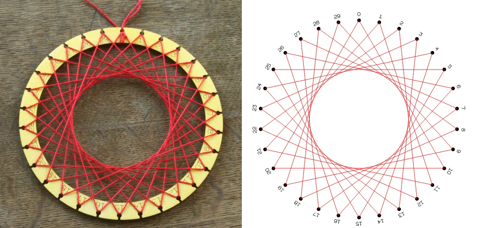

Σε αυτή την Ιστοεξερέυνηση οι μαθητές θα χρησιμοποιήσουν τις μαθηματικές και υπολογιστικές τους γνώσεις για να φτιάξουν το τέλειο δώρο... για την γιαγιά τους.
Εισαγωγή
Κοιτάξτε τις φωτογραφίες που ακολουθούν. Μπορειτε να παρατηρήσετε κάποιο μοτίβο;
Ίσως να φένεται περίπλοκο αυτή την στιγμή αλλα μέχρι το τέλος αυτής της ιστοεξερέυνησης θα μπορειτε και εσεις να καταλαβαίνετε και να σχεδιάζετε αυτα τα σχήματα!
Ας Ξεκινήσουμε!
Τα γενέθλια της γιαγιάς σου πλησιάζουν και έχεις σκεφτει το τέλειο δώρο! Ένα έργο τέχνης με κλοστές, το οποιο
συνδιάζει old-school πλέξιμο με ενα μοντέρνο design που απαίτει μαθηματικές γνώσεις και υπολογιστική δύναμη!